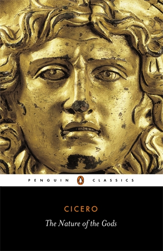
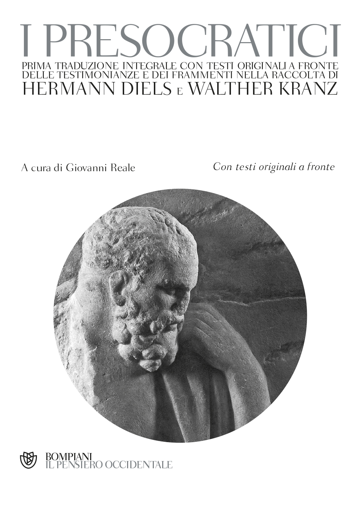
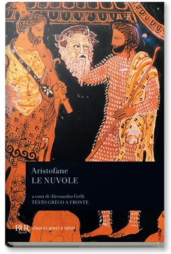
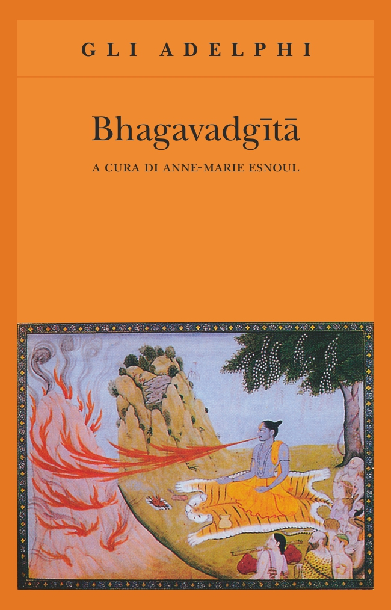
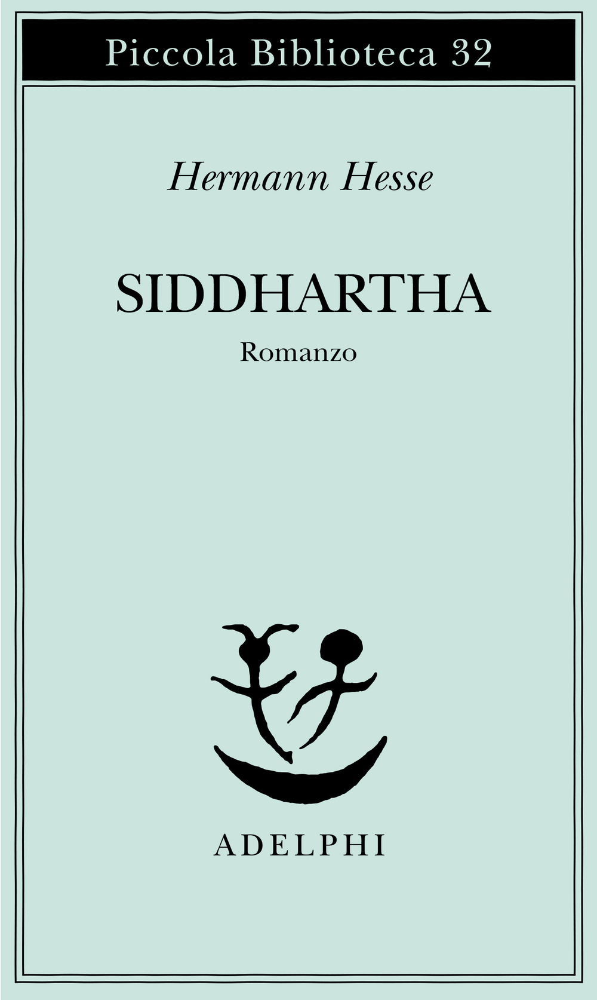
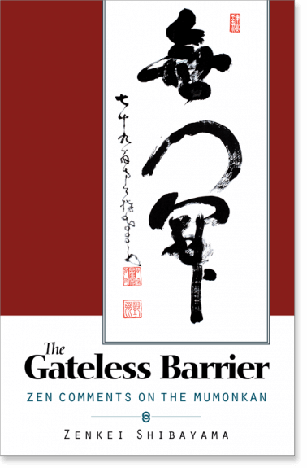

53:38 · 15 OPERE
Pensiero orientale e filosofia occidentale.
Il filo del discorso
Il confronto fra pensiero orientale e filosofia occidentale è impostato come una domanda sui limiti delle categorie che usiamo per comprendere altre tradizioni. Il relatore distingue la sapienza greca dalla forma dialogica platonica e dalla sistemazione aristotelica, poi guarda alle difficoltà di tradurre il Dao e il linguaggio biblico. Il Tao tê ching e lo Zhuangzi sono le letture proposte per avvicinarsi al pensiero cinese, mentre Schopenhauer e Hesse esemplificano la ricezione europea.
Leggi la sintesi completaRiduci la sintesi
Il percorso passa anche per le guerre dell’oppio, la scienza moderna e la corsa nucleare, con giudizi politici attribuiti al relatore. Nella parte finale il bastone di Shuzan, un aneddoto su Diogene e il sermone del fiore interrogano ciò che una parola permette o impedisce di vedere. Il tema che tiene insieme le divagazioni è la distanza fra conoscere una classificazione e comprendere una esperienza. La scheda conserva questo problema senza assumere che Oriente e Occidente siano blocchi omogenei, che tutte le tradizioni asiatiche rifiutino la logica o che una singola traduzione sia l’unica possibile. Distingue inoltre il terzo escluso dalla non contraddizione e separa i racconti spirituali dalle affermazioni storiche verificabili.
I libri nel discorso

De natura deorum (La natura degli dèi)
Note sul riferimento
Copertina: The Nature of the Gods, Penguin Classics,28 ottobre 2004,288 pagine, traduzione di Horace C.P. McGregor, introduzione di J.M. Ross, ISBN 9780140442656. Copertina della traduzione inglese, non di una edizione latina antica o della edizione Oxford Walsh.
Copertina reale con titolo, autore e testa dorata, verificata sul sito Penguin e vista interamente. La edizione non viene attribuita al video. Una immagine bianca a forma di volume proveniente da un altro catalogo è rimasta esclusa perché non riscontrata come copertina reale.
Cicerone e De natura deorum espliciti, discussione di religio; nessuna edizione del volume identificata.

I Presocratici (Die Fragmente der Vorsokratiker)
Note sul riferimento
Copertina: Bompiani · 2006 · a cura di Giovanni Reale, con testi originali a fronte
Immagine autentica dell’opera, controllata visivamente; l’edizione di riferimento non è attribuita al filmato.
Diels–Kranz e i frammenti dei presocratici sono richiamati esplicitamente.

Le nuvole
Note sul riferimento
Copertina: BUR, Classici greci e latini, 2001, a cura di Alessandro Grilli, testo greco a fronte, ISBN 9788817173360. Il catalogo editoriale corrente indica 272 pagine; non si attribuisce automaticamente la stessa paginazione a ogni ristampa.
Copertina autentica Rizzoli / BUR: Aristofane, Le nuvole, cura di Alessandro Grilli, testo greco a fronte e figure tratte da iconografia vascolare. Edizione di riferimento, non certificata nel filmato. La prima rappresentazione è del 423 a.C.; il testo conservato comprende una successiva rielaborazione.
Le nuvole di Aristofane esplicite nel confronto fra filosofia e commedia.

Tao tê ching
Note sul riferimento
Copertina: Adelphi · Tao tê ching · edizione di riferimento
Immagine associata all’ISBN di riferimento e controllata visivamente; edizione e traduzione non identificate come quelle citate o lette nel video.
Dao De Jing/Tao tê ching, Laozi e curatela Duyvendak espliciti; non si crea una seconda voce per una ristampa.

Zhuang-zi (Chuang-tzu)
Note sul riferimento
Copertina: Adelphi · Biblioteca Adelphi 121, 1982
Immagine autentica dell’opera, controllata visivamente; l’edizione di riferimento non è attribuita al filmato.
Chuang Tzu/Zhuangzi esplicito, letto in relazione al Dao De Jing; opera composita distinta dal primo classico.

Bibbia
Note sul riferimento
Copertina: San Paolo, 2014 · Nuova Versione dai Testi Antichi · edizione di riferimento
Genesi, Vangelo di Giovanni 1:1, Esodo 3:14, Paolo ad Atene e Isaia sono richiami espliciti alla Bibbia.

Metafisica
Note sul riferimento
Copertina: Bompiani · Il pensiero occidentale · 2004 · a cura di Giovanni Reale
Copertina autentica di riferimento, controllata visivamente. L’edizione non è identificata come quella usata nel video.
Metafisica e libri dopo la Fisica espliciti; distinzione fra storia del titolo e contenuto dell’opera.

Lettera alla regina Vittoria (Letter of Advice to Queen Victoria,1839)
Identificazione probabile
Note sul riferimento
Intestazione di un adattamento didattico moderno, non manoscritto originale: Documento del 1839. La traduzione ospitata a Harvard rinvia a Ssu-yü Teng e John K. Fairbank, China’s Response to the West, Harvard University Press 1954, ripresa in Mark A. Kishlansky, Sources of World History, vol.II,1995, pp.266–269. L’immagine è solo la intestazione di un distinto adattamento scolastico moderno di Barbara Trapani, Historical Association; non è una copertina esterna né un autografo di Lin.
La immagine non contiene il testo integrale. La versione scolastica è dichiaratamente adattata e non viene usata per attribuire al filmato una edizione o una traduzione. Editore della fonte integrale e autore dell’adattamento sono distinti.
Lettera di un dignitario cinese alla Regina Vittoria sulle guerre dell’oppio: riconoscibile come Lin Zexu 1839, nome non pronunciato qui.

Le due culture (The Two Cultures)
Note sul riferimento
Copertina: Conferenza Rede 1959. Copertina The Two Cultures, Cambridge University Press, Canto Classics,26 marzo 2012,179 pagine, ISBN 9781107606142, introduzione di Stefan Collini; comprende anche ASecond Look 1963. Il 2014 è la data della versione digitale nel catalogo, non la prima pubblicazione del saggio.
Copertina autentica con frutto composto da sezioni diverse, titolo e C.P.Snow, dal catalogo Cambridge. Edizione moderna contenente la conferenza 1959 e il seguito 1963, non volume esclusivamente dedicato al disarmo.
Snow, anni Cinquanta e The Two Cultures/Le due culture espliciti; conferenza Rede del 1959.

Upaniṣad (raccolta di testi vedici)
Note sul riferimento
Copertina della selezione The Upanishads, traduzione di Juan Mascaró: Copertina della selezione The Upanishads, Penguin Classics,144 pagine, traduzione e cura di Juan Mascaró, ISBN 9780140441635. Il catalogo statunitense data la pubblicazione al30novembre 1965, quello britannico la ristampa al24febbraio 2005. Non è la totalità del corpus, né la traduzione conosciuta da Schopenhauer.
Raccolta moderna di riferimento, non autore unico, non traduzione Olivelle Oxford e non edizione citata da Schopenhauer. La miniatura autentica mostra una scena indiana e il titolo Penguin; vista interamente.
Upaniṣad esplicite fra le letture di Schopenhauer; raccolta non un testo unico o edizione Mascaró nel video.

Bhagavadgītā
Note sul riferimento
Copertina: Adelphi, gli Adelphi 29, 1991; a cura di Anne-Marie Esnoul, traduzione di Bianca Candian.
Immagine autentica dell’opera, controllata visivamente; l’edizione di riferimento non è attribuita al filmato.
Bhagavadgītā esplicita e richiamo a Oppenheimer.

Siddhartha
Note sul riferimento
Copertina: Adelphi, Piccola Biblioteca 32, traduzione di Massimo Mila, 180 pagine, ISBN 9788845901843. Catalogo editoriale: 1975, 98ª edizione. Romanzo originariamente pubblicato nel 1922; copertina attuale di riferimento.
Copertina autentica Adelphi vista integralmente: fondo celeste, Piccola Biblioteca 32, Hermann Hesse, Siddhartha, Romanzo e marchio Adelphi. La risorsa completa sostituisce l’immagine social orizzontale della stessa pagina.
Siddhartha, Hermann Hesse e fortuna negli anni Sessanta espliciti.

Il mondo come volontà e rappresentazione
Note sul riferimento
Copertina: Newton Compton · edizione di riferimento
Il mondo come volontà e rappresentazione esplicito nel confronto con il pensiero della illusione.

Mumonkan (Wumenguan,La porta senza porta)
Identificazione probabile
Note sul riferimento
Copertina della edizione commentata del Mumonkan, Zenkei Shibayama: Copertina della edizione commentata The Gateless Barrier: Zen Comments on the Mumonkan, Zenkei Shibayama, Shambhala,1 dicembre 2000,384 pagine, ISBN 9781570627262. Il commentatore moderno non è l’autore medievale della raccolta. Non è una copertina originaria cinese o la specifica traduzione letta nel video.
Testo tradizionale distinto dal commento di Zenkei Shibayama. I riscontri dei casi6 e43 sono in una altra traduzione, Nyogen Senzaki/Paul Reps; non si attribuiscono quei traduttori a questo volume. Copertina autentica Shambhala vista interamente.
Bastone corto di Shuzan, corrispondenza con caso43; anche sermone del fiore al3058, corrispondenza con caso6. Titolo della raccolta non pronunciato.

La Repubblica
Identificazione probabile
Note sul riferimento
Copertina: Laterza · La Repubblica · edizione con testo a fronte di riferimento
Immagine associata all’ISBN di riferimento e controllata visivamente; edizione e traduzione non identificate come quelle citate o lette nel video.
Metafora della caverna esplicita, riconoscibile in Repubblica VII; titolo non pronunciato.
Fonti e approfondimenti (19)
- ahf.nuclearmuseum.org ↗
- nbarchive.ku.dk ↗
- oracc.museum.upenn.edu ↗
- plato.stanford.edu ↗
- plato.stanford.edu ↗
- plato.stanford.edu ↗
- religion.princeton.edu ↗
- sacred-texts.com ↗
- sacred-texts.com ↗
- adelphi.it ↗
- biblegateway.com ↗
- cambridge.org ↗
- metmuseum.org ↗
- penguin.co.uk ↗
- penguin.co.uk ↗
- perseus.tufts.edu ↗
- perseus.tufts.edu ↗
- sefaria.org ↗
- sipri.org ↗